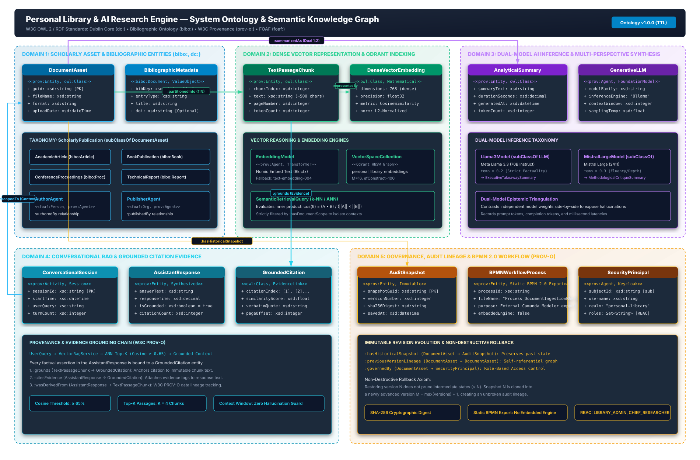

Formal W3C OWL 2 and RDF domain ontology capturing Scholarly Document Assets, Dense Vector Embeddings, Dual-Model LLMs, Grounded Citations, and PROV-O Governance.

| Domain | Primary Classes | Standards Alignment | Key Semantic Properties |
|---|---|---|---|
| 1. Scholarly Asset & Metadata | :DocumentAsset, :ScholarlyPublication, :AcademicArticle, :BookPublication, :BibliographicMetadata, :AuthorAgent |
bibo:Document, bibo:Article, dc:creator, foaf:Person |
:describesDocument, :authoredBy, :publishedBy |
| 2. Dense Vector Semantic Space | :TextPassageChunk, :DenseVectorEmbedding, :VectorSpaceCollection, :EmbeddingModel |
Mathematical Metric Space, Qdrant HNSW Graph |
:partitionedInto (1:N), :representedBy, :encodedByModel, :indexedIn |
| 3. Multi-Model AI Inference | :GenerativeLLM, :Llama3Model, :MistralLargeModel, :AnalyticalSummary, :ExecutiveTakeawaySummary, :MethodologicalCritiqueSummary |
prov:Agent, prov:wasGeneratedBy |
:summarizedAs (Dual 1:2), :synthesizedBy (Epistemic triangulation) |
| 4. Conversational RAG & Citations | :ConversationalSession, :UserQuery, :AssistantResponse, :GroundedCitation |
prov:Activity, prov:wasDerivedFrom |
:scopedTo (Context), :grounds (Evidence), :citesEvidence |
| 5. Governance & Audit Lineage | :AuditSnapshot, :BPMNWorkflowProcess, :SecurityPrincipal, :UserAccount |
prov:Entity, Camunda 2.0, Keycloak OIDC |
:hasHistoricalSnapshot, :previousVersionLineage, :orchestratedBy, :governedBy |
The ontology is published as fully valid RDF Turtle triples for integration with knowledge graphs (Apache Jena, Protege, GraphDB, Neo4j):
@prefix : <https://personallibrary.io/ontology#> .
@prefix bibo: <http://purl.org/ontology/bibo/> .
@prefix prov: <http://www.w3.org/ns/prov#> .
:doc_550e8400 a :AcademicArticle , prov:Entity ;
:guid "550e8400-e29b-41d4-a716-446655440000" ;
:fileName "attention_is_all_you_need.pdf" ;
:partitionedInto :chunk_0 , :chunk_1 ;
:summarizedAs :summary_llama , :summary_mistral ;
:hasHistoricalSnapshot :snapshot_v1 .
:chunk_0 a :TextPassageChunk , prov:Entity ;
:representedBy :vec_chunk_0 .
:vec_chunk_0 a :DenseVectorEmbedding ;
:dimensions 768 ;
:metric "Cosine" ;
:encodedByModel :model_nomic ;
:indexedIn :qdrant_collection .
:summary_llama a :ExecutiveTakeawaySummary ;
:synthesizedBy :model_llama_3_3 ;
:durationSeconds 14.2 .